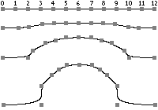

NURBSCurveExample.h
Consider a NURBS curve with 13 control points that are initially on the same straight line. The knot vector is open with uniformly spaced knots. The curve is necessarily a line segment. The control points must be moved to deform the central portion of the curve into a closed loop. The control weights are all 1 except for points 3, 5, 7, and 9, whose weights are 3/10. These weights were chosen to produce a final closed loop that is nearly circular. The next image shows the initial line segment and its control points. It also shows how the control points evolve early in the process.
|  |